What is the Jungle?
The jungle refers to any area of the map that is not a lane or part of either team's base, including the river that divides it. In a standard 5v5 match, four players take lanes while one is designated as the Jungler.
Junglers rely on killing neutral monsters to match their laning teammates in gold and experience. The purpose of the jungle is to gain buffs, gold, and experience without interfering with your team's lane minions.
Assassins and Fighters are best suited for jungling due to their high early-game damage, allowing them to clear camps quickly and gank lanes effectively.
A jungler equipped with Retribution and Jungling Boots is significantly faster at clearing camps than any other hero. These are essential for effective jungling.
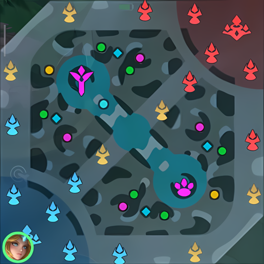
Minimap dot colors indicate monster types — purple for buff creeps, yellow for gold/exp, green for healing, and the paw/cross icons mark the Turtle and Lord.
Common Creeps
These small monsters are scattered throughout the jungle. They do not grant buffs but are valuable for gold and experience. Clearing these camps frequently keeps you ahead in farm.
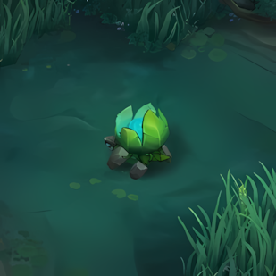
Lithowanderer
A passive creep that won't attack you. Grants the Walkie Grass buff which provides extra movement speed in the river. A Stone Roamer will appear moving along the river after it is killed.
92 Gold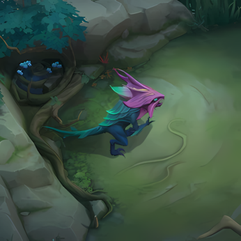
Horned Lizard
Uses ranged attacks and increases its own defense when at low HP. Be prepared for it to tank more damage as you finish it off.
92 Gold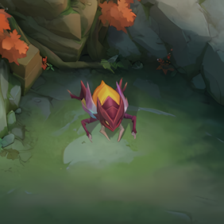
Fire Beetle
Upon death, spawns a small Crammer that can survive for up to fifteen seconds. Clearing this camp contributes to reaching level 4 faster on your initial jungle rotation.
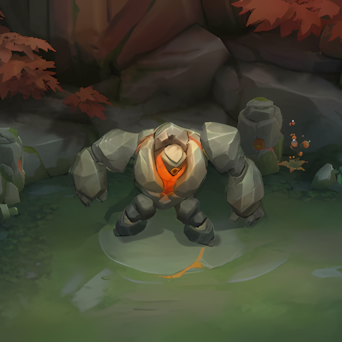
Lava Golem
A straightforward melee creep with no special abilities. Grants a Healing Buff on death, restoring HP and mana to the killer.
81 Gold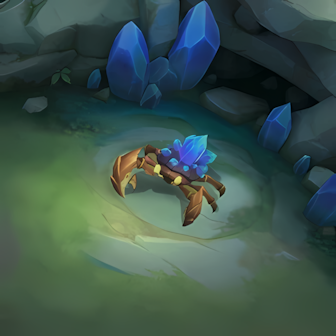
Scavenger Crab
Grants a Gold Buff or EXP Buff depending on the lane. A smaller Crab spawns first, giving a lesser amount of gold and experience and respawning more frequently.
36 GoldElite Creeps
Elite creeps spawn 30 seconds into the game and respawn 2 minutes after being killed. These are your priority camps — they grant powerful buffs that directly impact your damage output and ability uptime.
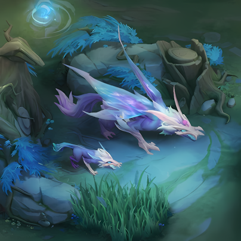
Thunder Fenrir
Purple BuffA duo creep. Killing them grants the Purple Buff (also called Blue Buff), which reduces all skill cooldowns by 10%, mana cost by 40%, and energy cost by 25%. Killing any enemy unit while buffed restores HP — 3% from minions, 8% from heroes, and 12% from creeps.
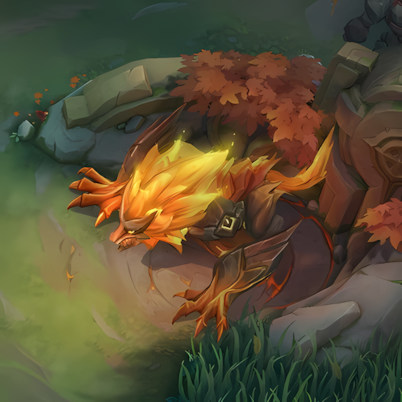
Molten Fiend
Orange BuffGrants the Orange Buff (also called Red Buff). Each time you attack an enemy hero, the Soul of Lava strikes them for extra true damage and slows them for 1 second. Effect has a 3-second cooldown. Damage scales with your role — tanks and fighters deal more true damage while marksmen and mages apply a stronger slow.
120 GoldLegend Creeps
The most powerful creeps on the map. Both grant team-wide rewards and are the most contested objectives in any match. Always fight for these when possible.
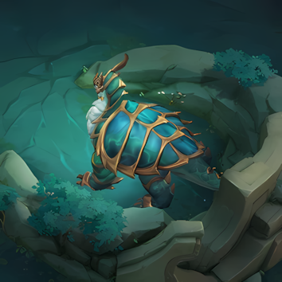
Turtle
Turtle BuffDefeating the Turtle grants the killer a regenerating shield that absorbs damage and increases Physical Attack and Magic Power. Allies who assisted receive a one-time shield and bonus gold. Spawns at 2 minutes.
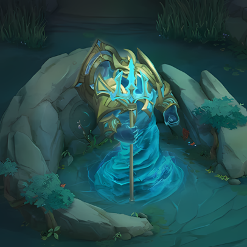
Lord
Lord BuffThe most powerful creep on the map. When killed, it pushes the lane with the fewest turrets for your team, enhances all minion waves across all three lanes, and charges the first turret it encounters with a true damage skill that disables it temporarily. Spawns at 8 minutes.
Terrain Features
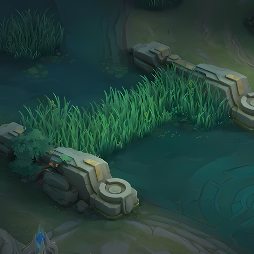
Bush
Entering a bush makes your hero invisible to enemies unless they are also inside the bush or have vision on it. Use bushes to ambush enemies, dodge skill shots, and set up ganks without revealing your position on the minimap.
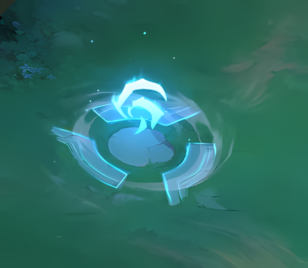
Cyclone Eye
Activating a Cyclone Eye gives your hero a blink effect, propelling you forward in your current movement direction. Useful for crossing terrain quickly, escaping, or closing gaps during a chase.
Jungle Buffs
Each buff type is granted by a specific monster. Understanding what each buff does helps you prioritize which camps to clear first based on your hero's needs.
Healing Buff
Restores 350 HP and 5% Mana over 2 seconds. Granted by: Horned Lizard, Fire Beetle, Lava Golem, Little Thunder Fenrir.
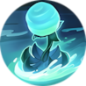
Walkie Grass
Increases movement speed while walking through the river area. Follows the killer for 120 seconds. Granted by: Lithowanderer.
Gold Buff
Provides 100 extra Gold over 30 seconds. The Little Crab version gives 30 extra Gold over 9 seconds. Granted by: Scavenger Crab.
Orange Buff
Attacks deal bonus true damage and slow enemies for 1 second. Effect cooldown of 3 seconds. Scales based on your role. Granted by: Molten Fiend.
Purple Buff
Reduces skill cooldowns by 10%, mana cost by 40%, energy cost by 25%. Killing units restores HP. Granted by: Thunder Fenrir.
Turtle Buff
Grants a regenerating shield that absorbs damage and boosts Physical Attack and Magic Power when not taking damage for 5 seconds. Granted by: Dragon Turtle.
Jungling Tips
Jungling means leaving the lane to farm monster camps and support teammates through surprise attacks and ganks. Your team relies on you for map control and ganking — always be moving, always be looking for opportunities.
Equip Retribution. It is required to purchase Jungling Boots, which deal extra damage to monsters and grant more gold and exp from camps.
Stay stealthy. Never use skills on lane minions or walk near enemy lanes — it reveals your position and removes the threat of your presence.
Track the enemy jungler. Keep your team updated on enemy jungler movement. Knowing their position prevents counterjungling and surprise flanks.
Secure at least one of three early. Buffs, kills, or Turtle. Ideally all three, but never fall behind on all three simultaneously.
Save Retribution for objectives. Use it to secure Turtle or Lord if enemies are nearby and contesting — it guarantees the last hit.
Creeps deal reduced damage when outnumbered. Having an ally nearby as you start a camp reduces the damage you take from the monster.
Jungle Rotation
A proper rotation gets you to level 4 efficiently and positions you near a lane to gank as soon as possible. Most junglers start near the EXP lane so that when their rotation ends, they are level 4 and ready to gank the Gold Lane.
Before 2:00, your damage to minions only credits gold and experience to nearby allies — not to you. Don't waste time on lanes before this window.